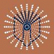

March 26, 1999
Gregory Crane has led this program into an exploration of what lies ahead in digital publishing and through his knowledge, enthusiasm, and purposeful direction, the possibilities appear real. It is my belief that in many universities, digital publishing endeavors will become a reality under the leadership, collaboration, and recognition of senior faculty and university administrators.
I will respond to several issues in Greg=s presentation from the perspective of a national teaching and research university with a student body of 10,000 and a faculty of 650. I will describe a more usual situation in regard to faculty and student current choices of a distribution medium, print or digital as well as the successful collaboration at Notre Dame between faculty, librarians and computing experts in exploring the digital world.
Print remains a popular choice for distributing the results of scholarship. For those graduate students who are completing a dissertation, print remains the only choice at Notre Dame. Discussions held by the Graduate Studies Council last year focused intensively on the experiences at Virginia Tech and other universities. Several issues were identified, including the need for greater software support for faculty and students, but the primary obstacle was seen to be the requirement not only for digital production of the dissertation but also for ready accessibility of the work via the World Wide Web (WWW). Although it is clear that these two requirements can be addressed separately and different solutions adopted for each question, the potential hindrance to future publication by students of their dissertations in journals or monographs was considered sufficient cause to move slowly into this brave new world. There was equally clear recognition of the positive impacts of moving ahead with digital publication in that it would provide significantly greater opportunities for integration of communication means, e.g., text, sound, graphics, video, as well as develop strong computer skills among students and faculty. Both of these would be strong catalysts for changing the culture of research and provide training along the lines of what Greg is proposing as well. It is also the case, however, that digital production of dissertations at Notre Dame is merely delayed, not derailed. Senior faculty members have more choices and several have mentioned submitting papers to online journals. This is easier in some disciplines than others, but even when limited to the ones of which I am personally aware, the range of submissions already reaches across math, chemistry, languages and government. One professor is quite explicit that his role is to serve as a model for more junior faculty for publishing in digital formats. He is equally articulate in stating that he believes research libraries must subscribe to online journals as soon as they become available, whether free or at a price. Buying and making online journals accessible in the context of the Aregular bibliographic apparatus@ sends a message of acceptance that complements a similar message from researchers in the field. Journals not subscribed to stand less chance of becoming known broadly, which then does reflect poorly when publications are evaluated for tenure.
On the second issue brought up today by Greg, that of collaboration, I want to mention two collaborative efforts in progress at Notre Dame. Both are collaborations among faculty, computing specialists and librarians. The William and Katherine Devers Program in Dante Studies at the University of Notre Dame was established in 1995 to support rare book acquisitions in the John A. Zahm Dante collection, to fund an annual lecture series and visiting professorship in Dante studies, and to support electronic and print publication of scholarly research in the field. Theodore J. Cachey Jr., associate professor of Romance languages and literature is the director, and Louis E. Jordan III, curator of the Libraries Special Collections is the Associate Director.
In addition to the distinguished hard copy Devers Series published by the University of Notre Dame Press in two volumes to date, the Devers Program has entered into collaborations with other universities and research institutes to publish scholarly resources for Italian studies on the Internet. The first such collaborative project was Renaissance Dante in Print (1472-1629), an online version of a rare book exhibit presented by the University of Notre Dame in conjunction with The Newberry Library with the technical assistance of the ARTFL project at the University of Chicago. Mounted in September 1994, it was one of the first exhibits of its kind available on the Internet and it continues to attract many visitors from around the world. The Devers Program and ARTFL subsequently teamed together with the Centro di studi Opera del vocabolario italiano, a research center of the Consiglio nazionale delle ricerche (CNR) in Florence, Italy, and the Department of Italian Studies at the University of Reading, England, to launch ItalNet. In August 1997, ItalNet began alpha testing of an online version of the Opera del vocabolario italiano textual database, which will ultimately offer scholars full-text search capabilities of a corpus of more than two thousand pre-1375 vernacular texts.
In October 1996, the Devers Program in Dante Studies was invited to participate in Progetto Italica , an initiative of Radio televisione italiana (RAI) to create a virtual campus of Italian culture on the Internet. In February 1997, the Devers Program organized a workgroup to produce a language teaching program using video material from the RAI.
Additional information on the Devers Program in Dante Studies can be found at http://devers.cc.nd.edu/ .
A second project to create an on-line ctalogue of Ambrosiana drawings is is led by Robert Randolf Coleman, professor of Art. The Medieval Institute at the University of Notre Dame is privileged to possess a photographic copy of the entire manuscript collection of the Biblioteca Ambrosiana in Milan. Former Director of the Medieval Institute and Doctor of the Ambrosiana Astrik L. Gabriel became coordinator of the project, conceived in 1960, whereby the Institute acquired positive and negative microfilms of all 12,000 Ambrosiana manuscripts; photographs and negatives of 10,000 drawings and 30,000 manuscript illuminations; and 8,000 color slides of drawings and illuminations. These materials, known collectively as the Ambrosiana Archive, comprise the Frank M. Folsom Ambrosiana Microfilm Collection and the Mary M. Davis Collection of Ambrosiana Drawings. In 1981, the late Franklin Murphy, Chairman of the Board of the Kress Foundation, proposed that these drawings be catalogued. Dr. Ralph McInerny, former Director of the Medieval Institute, discussed the project with Dr. Marilyn Perry, now president of the Kress Foundation, and preliminary plans were made. In 1982, art historian Robert R. Coleman began to prepare a computerized cataloguing system with the help of Dr. Louis Jordan, Curator of the Ambrosiana Archive. Of the 12,000 drawings in the Biblioteca Ambrosiana, descriptions for 5,133 drawings will soon be available for online searching. This Internet publication of the Ambrosiana Drawings Project is the fruit of a collaboration with ItalNet, an international consortium whose mission is to make available scholarly Internet resources of literary and historical materials relating to Italian studies. Founding members of ItalNet are the Opera del vocabolario italiano (OVI) of the Italian National Research Center (CNR), Florence, Italy, the ARTFL Project of the University of Chicago, the Devers Dante Program of the University of Notre Dame and the Italian Studies Department of the University of Reading (UK). Additional information can be found at http://www.nd.edu/~italnet/AMBROS/.
Future directions and goals for these as well as other projects in the idea stages are much more ambitious in their design and ability to foster scholarly communication. Terms such as layered, relational and beyond the limitations of linear text are frequently mentioned, and there is no doubt future efforts will scale new heights. Returning in closing to Greg’s remarks, I concur with his advocacy and support for collaboration between senior and junior faculty, and extend that partners in collaborative efforts to include faculty, libraries and computing experts as well. Thank you.
Conference Home Page |
ARL Scholarly Communications
© Association of Research Libraries, Washington, DC
Last Modified: April 8, 1999